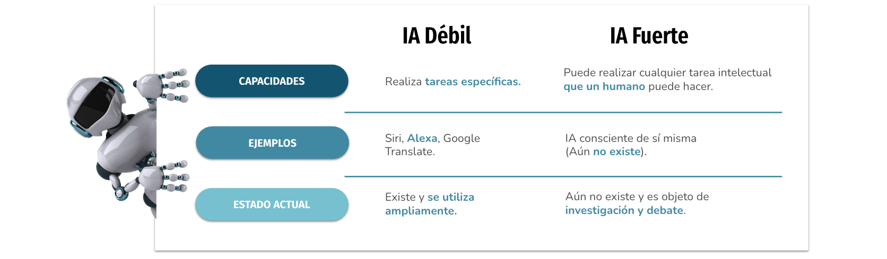

UD01: Caracterización de sistemas y utilización de modelos de Inteligencia Artificial¶
Modelos de Inteligencia Artificial¶
version: 2023-08-05¶
2. Tipos de Inteligencia Artificial. Escuelas y clasificaciones¶
Dentro de las distintas clasificaciones que vamos a ver, hay algunas tipologías que están definidas "en teoría" aunque aún no exista ninguna aplicación IA de esa clase.
Según tareas a resolver¶
- Por ejemplo, que la IA sea capaz de jugar al ajedrez o gestionar una cocina sin intervención humana.
- Hay tareas sencillas, concretas, y puntuales que son relativamente sencillas de programar, mientras que hay tareas complejas en las que, además influyen muchos factores exteriores (sentimientos, contexto, moral, ética, creencia religiosa...).
- Esta clasificación según tareas es una aproximación bastante simple, con dos opciones: 
Inteligencia Artificial Débil (o estrecha)¶
IA Débil también conocida como IA estrecha, se define como la inteligencia artificial racional que se centra típicamente en una tarea estrecha. Es decir orientada a resolver problemas muy concretos, en un entorno perfectamente acotado.
- Por tanto consideramos que este tipo de Inteligencia Artificial débil es limitada, pues no es capaz de adaptarse o asumir cambios respecto a lo que se le ha programado.
las características de la Inteligencia Artificial débil son:
- Ya existen en la vida real: Como hemos comentado, los asistentes virtuales, programas como Watson o Alpha Go que vimos en la unidad anterior.
- Se orientan a resolver problemas muy concretos: El programa que "sabe" jugar al Go, no sabe hacer otra cosa. Ni tiene posibilidades de aprender a jugar a otra cosa, por muy similar que sea.
- Son reactivas: No tienen iniciativa, es necesario que se desencadene la acción que tienen programada para que se inicie su rutina.
- No son flexibles: Colapsan si se encuentran en un caso no previsto en su programación.
- Quedan limitadas por lo que programa un humano: Es el humano quien programa lo que "tiene que pensar" la máquina. Si el humano no programa deja sin considerar ciertas opciones o posibles situaciones, la IA nunca será capaz de suplirlo o aprenderlo sobre la marcha por sí misma.
- Se programan con pocas redes neuronales: Hablaremos más adelante sobre las redes neuronales.
- No razonan, solo computan: No tienen en cuenta ningún factor moral, contextual, circunstancial, emocional... que a un humano le haría reaccionar de manera diferente.
- La máquina está programada para alcanzar tal objetivo o funcionar de tal manera, y así lo hará sin "entender" lo que está haciendo. Por tanto: no tiene conciencia.
- Aprenden a base de ejemplos: Necesita conocer muchos ejemplos de lo que tiene que hacer (la base de datos), con todas las variantes posibles. Por ejemplo, en la máquina que juega al Go, se la "entrenó" con 50 millones de partidas de dicho juego.
- Son repetitivas: No se cansan nunca, son implacables, siempre la misma rutina. No salen de su marco de trabajo: Y esto supone que pueden ocuparse de tareas mecánicas, repetitivas, "aburridas" para sustituir al humano mejorando rendimiento y precisión. Pero necesitará siempre una supervisión humana que vaya decidiendo cómo adaptar el programa a las cambiantes circunstancias.
Inteligencia Artificial Fuerte¶
La Inteligencia Artificial fuerte (IAF) o general o (IAG), sería aquella que iguala o excede la inteligencia humana promedio. Sería capaz de realizar con éxito cualquier tarea intelectual del ser humano, teniendo en cuenta todos los factores y matices que pueden intervenir cuando una persona toma decisiones en cada momento mientras realiza una tarea.
Comparando con la IA débil, sus características son: * No existe en la realidad: Si quieres "ver" cómo sería puedes recurrir a personajes de ficción como T-800, Wall-E o J.A.R.V.I.S. Resolverán problemas abiertos. * Serán proactivas: En función de la misión u objetivo que tenga, y de las circunstancias, iniciará cualquier tipo de rutina sin esperar a que un humano se lo pida o esté pendiente. * Serán flexibles: Podrán encontrar similitudes entre algo que conocen y algo que se le parezca un poco. Por ejemplo, aunque inicialmente solo haya sido programada para saber andar, será capaz de aprender a correr sin necesidad de intervenir en su programa.
- Se autoprogramarán: Serán capaces de detectar sus propios límites y se regularán a sí mismas para no excederlos.
- Usarán muchas redes neuronales: Y además podrán entrar en conflicto entre ellas en algunas ocasiones. Esto quiere decir que necesitarán una capacidad de almacenaje de información y cómputo que aún hoy no hemos llegado a alcanzar.
- Imitarán el comportamiento humano: Serán capaces de razonar, y por tanto, de alcanzar algún tipo de consciencia.
- Aprenderán como las personas: Podrán recordar datos, observar nuevas situaciones y encontrar relaciones entre diferentes acciones. Esto quiere decir que si saben jugar al ajedrez y "observan" el juego de las damas, podrán aprender a jugar a las damas basándose en lo que saben sobre jugar al ajedrez.
- Serán capaces de aprender nuevas tareas: Modificarán la tarea o cómo realizan la tarea para adaptarse a las circunstancias.
- Serán capaces de adaptarse a nuevos escenarios: Podrán adaptarse a cambios y nuevas situaciones para seguir cumpliendo su objetivo.
-
Escuelas de Pensamiento.¶
- Inteligencia Artificial Convencional.
-
Inteligencia Artificial Computacional.
-
Estas dos escuelas difieren en la ciencia que hay tras los procesos que siguen para llegar a los resultados esperados. Pero, con los avances que se están dando en los recursos que utiliza la segunda, muchas de las aplicaciones que tenía la primera, están siendo llevadas al campo computacional.
Inteligencia Artificial Convencional¶
- Se conoce también como Inteligencia Artificial simbólico-deductiva. Está basada en el análisis formal y estadístico del comportamiento humano ante diferentes problemas:
- Razonamiento basado en casos: Ayuda a tomar decisiones mientras se resuelven ciertos problemas concretos y, aparte de que son muy importantes, requieren de un buen funcionamiento.
- Sistemas expertos: Infieren una solución a través del conocimiento previo del contexto en que se aplica y ocupa de ciertas reglas o relaciones.
- Redes bayesianas: Propone soluciones mediante inferencia probabilística.
- Inteligencia artificial basada en comportamientos: Esta inteligencia contiene autonomía y puede auto-regularse y controlarse para mejorar.
- Smart process management: Facilita la toma de decisiones complejas, proponiendo una solución a un determinado problema al igual que lo haría un especialista en dicha actividad.
Inteligencia Artificial Computacional¶
- La Inteligencia Computacional (también conocida como IA subsimbólica-inductiva) implica desarrollo o aprendizaje interactivo (por ejemplo, modificaciones interactivas de los parámetros en sistemas de conexiones). El aprendizaje se realiza basándose en datos empíricos, utilizando métodos computacionales inspirados en procesos de la naturaleza, que permiten alcanzar soluciones aptas a problemas complejos que los modelos tradicionales no pueden resolver por no existir una solución analítica.
Algunas técnicas de esta escuela son: * Máquina de vectores soporte: sistemas que permiten reconocimiento de patrones genéricos de gran potencia. * Redes neuronales: sistemas basados en redes de unidades de computación lineal para simular computación no lineal * Modelos ocultos de Markov: aprendizaje basado en dependencia temporal de eventos probabilísticos. * Sistemas difusos: técnicas para lograr el razonamiento bajo incertidumbre * Computación evolutiva: también conocidos como algoritmos genéticos, aplica conceptos inspirados en la biología, tales como población, mutación y supervivencia del más apto para generar soluciones sucesivamente mejores para un problema.
Clasificación Stuart J. Russell y Peter Norvig¶
Stuart J. Russell y Peter Norvig, investigadores informáticos, publicaron en 1995 su libro "Artificial Intelligence: A Modern Approach", que se ha convertido en el libro de texto fundamental en cientos de universidades a nivel mundial (ya lleva varias ediciones publicadas). Plantean cuatro categorías básicas.
- Sistemas Cognitivos: Piensan como humanos, intentan emular el proceso humano → Proceso de toma de decisiones, resolución de problemas, y el propio paradigma del aprendizaje.
- Test de Turing: Actúan como humanos, intentan emular el comportamiento humano (sin pasar por el pensamiento o razonamiento que conduce a dicho comportamiento) → A nivel práctico se aplica en la robótica y sistemas de actuadores en el mundo físico.
- Leyes del pensamiento: Piensan con razonamientos. Cumplimiento exacto de las leyes del razonamiento lógico, teniendo en cuenta todos los factores que afectan a la cuestión. No hemos llegado a esto aún. Sería el caso de los sistemas expertos. Solo son posibles aproximaciones para campos de investigación muy especializados y acotados.
- Agentes inteligentes: Actúan racionalmente (sin pasar por el proceso de razonamiento lógico). Los dos últimos requieren una capacidad de cómputo muy importante, a veces, aún, inaccesible.
Clasificación Hintze¶
- En noviembre de 2016, Arend Hintze, profesor de la Universidad de Michigan e investigador en el campo de la Inteligencia Artificial, escribió un artículo titulado: "Understanding the four types of AI, from reactive robots to self-aware beings" una clasificación más realista y concreta para los tipos de entidades que existen o que se aspira a crear.